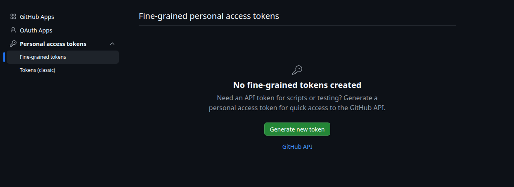
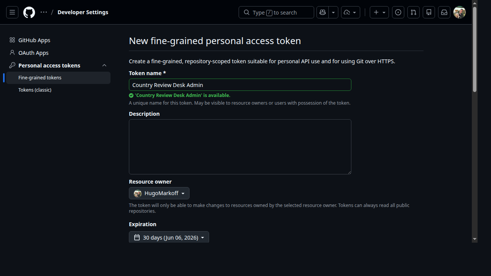
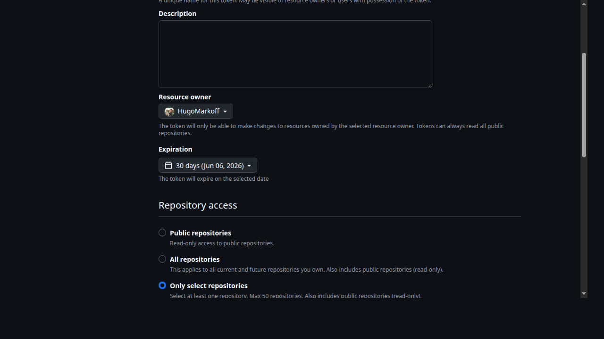
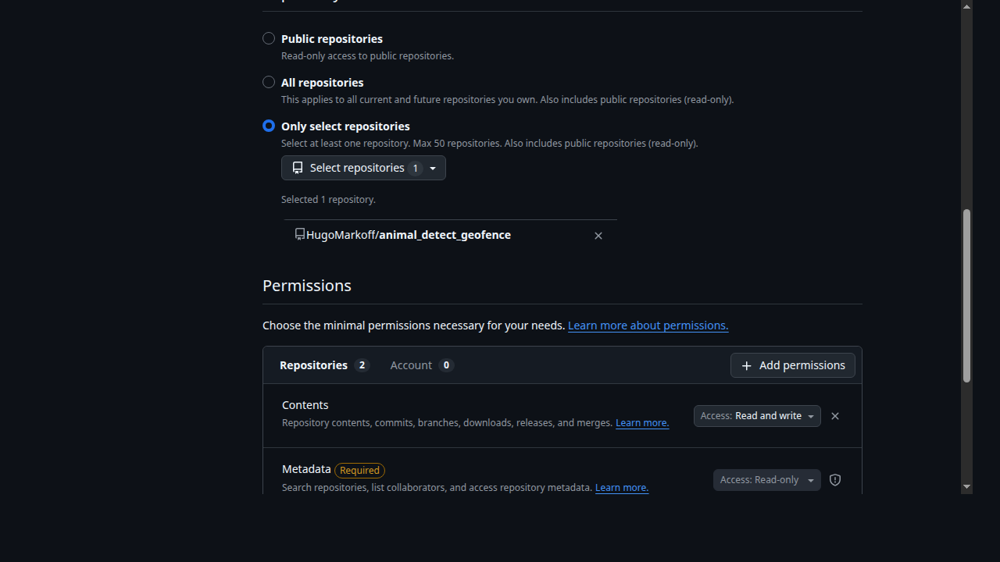
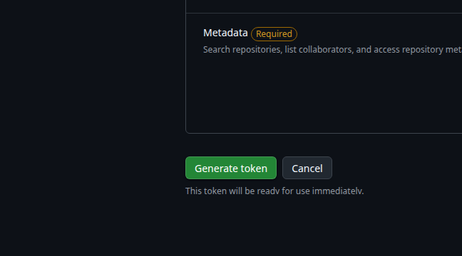

Step 1
Get repository access first

Before anything else, ask Hugo Markoff on LinkedIn or email hugo@animaldetect.com to be invited to the repository. After you have access, open the token page.
Open GitHub Token PageAdmin Guide
If GitHub shows an extra confirmation or password page before the token form, just continue through it until you reach the real token creation screen.
Step 1

Before anything else, ask Hugo Markoff on LinkedIn or email hugo@animaldetect.com to be invited to the repository. After you have access, open the token page.
Open GitHub Token PageStep 2

Set Token name to Country Review Desk Admin. The default 30 day expiration is fine.
Step 3

Choose Only select repositories and select HugoMarkoff/animal_detect_geofence.
Step 4

Set Contents to Read and write. Leave everything else alone.
Step 5

Click Generate token. GitHub shows the token only once, so copy it immediately and save it somewhere secure.
Step 6
Paste the token below. This opens the review desk in the same tab and carries the token into the Admin field for you.
This token stays in this browser tab only and is passed straight into the review desk.
Important
You can reuse the same saved token until it expires or you revoke it. But you still need to paste it again each new browser session, because the site keeps it only in memory.
Related Links